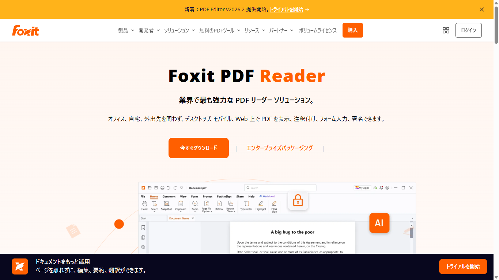

Foxitの料金プラン｜無料Readerでできること・有料版との違い
Foxitは、PDFの閲覧から本文編集までに対応するソフトです。無料のPDF Readerと有料のPDF Editorがあり、同じ「無料」でも利用条件が異なります。
閲覧や注釈だけで足りるのか、本文編集のために契約すべきか。料金と機能の境目を整理し、どちらを選ぶべきか判断できるようにします。
Foxitの無料利用はReaderと14日間トライアルを分けて考える
Foxitには、期限のない無料Readerと、期間限定のEditor+トライアルがあります。どちらを選ぶか決めるには、まず両者を分けて考えます。
- Reader：期限なく無料
- Reader：閲覧・注釈・入力・署名
- Editor+体験版：14日間
- 体験版：カード登録は不要
- 体験版：自動課金なし

ReaderとEditorの現行条件を同じ公式サイト内で見比べられます。
Foxit PDF Readerは期限なく無料で使える
Foxit PDF Readerは、期限なく使える無料ソフトです。完成済みのPDFを読み、書き込む作業に向いています。有料版の契約や14日間の試用は必須ではありません。
PDF Editor+は14日間だけ全機能を試せる
PDF Editor+には14日間のトライアルがあります。申込時のクレジットカード登録は不要で、期間終了後も有料契約へ自動移行しません。
本文編集やOCRが必要なら有料版を検討する
無料Readerの中心は、完成済みPDFの閲覧や書き込みです。文書そのものを編集するなら、PDF Editorが対応する機能を確認しましょう。
OCRやファイル変換、墨消しも、Readerの無料範囲には含まれません。必要な作業を先に洗い出すと、不要な契約を避けられます。
無料のFoxit PDF Readerでできること・できないこと
Readerで足りるかは、PDFを「読む・書き込む」だけなのか、「中身を作り替える」のかで判断できます。
閲覧・印刷・注釈・フォーム入力・署名はReaderで対応できる
無料Readerで扱える主な作業は次のとおりです。
- PDFを開いて読む
- PDFを印刷する
- コメントや注釈を加える
- PDFフォームに入力する
- PDFへ署名する
申込書への記入や校正コメントの追加など、元の本文を書き換えない作業が中心です。無料オンラインツールやFoxit eSignは別製品なので、同じ料金条件とは限りません。
PDF本文の編集・変換・OCR・墨消しは有料版を確認する
文章や画像を直接直したい場合は、PDF Editorを検討します。スキャン文書のOCR、別形式への変換、機密情報の墨消しも、有料版で対応できるか確かめましょう。
PDF EditorとEditor+では利用できる端末や追加機能が異なります。製品名だけで決めず、実際に行う作業と各エディションの対応範囲を照らし合わせてください。
無料Readerの日本語サポート範囲は事前に確認する
FoxitJapanには日本語のサポートセンターがあります。ただし、Foxit Readerなどの無償製品は通常の問い合わせ対象外です。
無料製品についてはFAQやユーザーフォーラムを利用します。個別の有人対応が必要なら、有償サポートインシデントを購入する方法があります。
Foxit PDF Editorの料金プランと選び方
日本向けページでは円建ての年額が表示されます。米国地域向けのドル建て公開価格とは分けて読みましょう。
- PDF Editor：20,412円／ユーザー／年
- PDF Editor+：25,122円／ユーザー／年
- 年契約・月払い：$10.99／ユーザー／月から
- 永続ライセンス：$209.99／ユーザー
- 30ライセンス以上：最大30%割引
米国地域向けの年額公開価格は、PDF Editorが$129.99、Editor+が$159.99です。
日本向けの円価格と単純に置き換えず、購入画面で表示地域と通貨を確認してください。適用税は別途です。
表示地域と支払い周期を切り替え、購入時に適用される価格を確かめられます。
PDF Editorは基本的なPDF編集をしたい人向け
PDF Editorは、日本向けページで年額20,412円と表示されています。Windows、macOS、WebでPDF本文を編集したい人向けの基本プランです。
無料Readerの閲覧や注釈だけでは足りず、モバイル版やEditor+の追加機能が不要なら、まずこのプランが候補になります。
PDF Editor+は複数端末と追加機能を使いたい人向け
PDF Editor+の日本向け表示は年額25,122円です。Windows、macOS、Webに加え、iOSとAndroidも対象に含まれます。
Smart Redactや年間150件のeSign送信も含まれます。ただし、単体のFoxit eSignは別製品です。eSign専用プランの料金をPDF Editor+へ当てはめないでください。
サブスクリプションと永続ライセンスは更新の有無で選ぶ
年払いと年契約・月払いは、停止するまで自動更新されるサブスクリプションです。契約期間と請求周期を一緒に見ておきましょう。
Foxit PDF Editor 14には、$209.99の永続ライセンスもあります。一度の購入でPDF Editor 14を利用する契約です。購入対象のバージョンと、将来版へのアップグレード条件は分けて確認してください。
14日間トライアルはカード不要で自動課金されない
有料版を試したい場合は、PDF Editor+の14日間トライアルを使えます。カード不要で始められ、自動課金もありません。
- 対象：Windows、macOS、Web、iOS、Android
- 機能：Editor+の全機能
- AI Assistant：月300クレジット
- カード登録：不要
- 自動課金：なし
- 終了後：無料Readerを利用可能
トライアル中はEditor+の機能を試せる
トライアルの対象はPDF Editor+です。Windows、macOS、Webに加え、iOSとAndroidでも対象機能を試せます。
試用中は、モバイル対応が必要かを先に確かめます。Smart Redactや年間150件のeSign送信を使う予定があるかどうかも、EditorとEditor+を分ける判断材料です。
終了後は無料Readerへ戻せる
14日間が終わっても、自動的に有料契約へ切り替わることはありません。その後も無料Readerへ移れます。
トライアルの終了と、有料契約後の自動更新は別の仕組みです。トライアル終了後は自動課金されませんが、有料契約は停止手続きをしない限り更新されます。
体験版の対象製品と試用終了後の扱いを、申込画面で確認できます。
日本からの支払い方法・請求書・税の注意点
日本向けページはJPY表示で、複数のカードとPayPalの決済ロゴがあります。請求書や税込総額は購入前の確認が必要です。
日本向け料金ページはJPYの年額を表示する
日本向け料金ページでは、PDF Editorが20,412円、Editor+が25,122円の年額表示です。同じページにある米国地域向けUSD定価とは、別の価格として表示されています。
税を含む最終総額はカートで確認します。通貨と請求額を見てから注文してください。
JCB・PayPalなどの決済ロゴが表示される
料金ページには、American Express、Visa、Mastercard、Discover、Diners Club、UnionPay、JCB、PayPalのロゴが表示されています。
これらのブランド表示があっても、発行会社による決済承認まで保証されるわけではありません。利用予定のカードで通らない場合に備え、PayPalなど別の手段も検討します。
請求書・領収書・適格請求書は購入前に問い合わせる
利用規約には、注文と請求書の処理に関する記載があります。ただし、個人購入後の請求書・領収書の取得方法は案内されていません。
日本の適格請求書を発行できるかは、公開情報だけでは分かりません。Foxitへ問い合わせる際は、一般的な請求書・領収書の発行可否とは分けて尋ねてください。税務判断は必要に応じて税理士へ確認してください。
Adobe Acrobatと比べる前に必要な作業を決める
FoxitとAdobe Acrobatを比べる前に、Foxit内のどの製品が候補になるかを絞ります。無料Reader、Editor、Editor+では対象となる作業と端末が異なるためです。
- 閲覧・注釈だけ：無料Reader
- 本文編集・OCR：PDF Editor以上
- iOS・Android：PDF Editor+
- Smart Redact・eSign送信：PDF Editor+
閲覧と注釈が中心ならFoxit Readerから試す
本文を書き換えない作業なら、Foxit Readerが候補です。まず無料版で必要なファイルを扱えるかを見極めれば、有料版との比較が必要かどうかも分かります。
編集機能・連携・社内標準が必要なら両製品を確認する
本文編集やOCRが必要なら、Foxit PDF EditorはWindows、macOS、Webに対応します。iOSやAndroid、Smart Redact、年間150件のeSign送信が必要ならEditor+が候補です。
そのうえでAdobe Acrobatと比べる場合は、対象端末や社内で必須の連携について、両製品の対応状況を比べます。Adobe Acrobatの現行料金や無料期間は未検証のため、価格差や優劣はここでは断定しません。
電子契約が主目的ならPDF編集ソフトと分けて選ぶ
PDFへの署名と、契約書を複数人に送り、締結状況を管理する電子契約は目的が異なります。電子契約が中心なら、PDF Editorの料金だけで決めない方がよいでしょう。
電子契約サービスを比べる場合は、送信件数や承認フローなど必要な条件から候補を絞れます。
解約・ダウングレード・返金条件
有料サブスクリプションは自動更新です。トライアルの自動課金なしとは条件が違うため、契約前に停止方法まで押さえておきましょう。
- 自動更新：停止するまで継続
- 更新停止：ポータルまたは書面申請
- 返金：年額初回購入などは14日以内に申請
- 契約終了後：有料機能は継続しない
- Readerへの移行：無料機能を利用可能
有料プランは解約するまで自動更新される
月払い、年契約・月払い、年払いのサブスクリプションは、停止しない限り自動更新されます。選んだ周期によって、次の請求時期も変わります。
申込時には料金だけでなく、契約期間と更新単位を一緒に記録しておくと見落としを防げます。
自動更新はポータルまたは書面申請で停止する
更新停止は、初回申込時の確認解除、Foxit customer portalからの申請、またはFoxitへの書面申請で行えます。
規約で分かるのは、ポータルから申請できることまでです。具体的なメニュー名やクリック順は、契約画面に表示される案内で確認してください。
14日以内の返金条件とReaderへの移行を分けて考える
返金条件は契約形態で異なります。年額前払いのサブスクリプションは、初回購入後14日以内に解約すれば返金対象です。Foxit直販の非サブスクリプション製品も、受領後14日以内なら返品できます。該当する返金では購入額の5%が手数料として差し引かれます。
年契約・月払いは1年間の契約です。14日を過ぎて解約しても、残りの年間支払い義務はなくなりません。次回の更新を止める場合は、更新前に手続きを済ませます。
契約終了後も、無料Readerへ移れば閲覧や注釈などを続けられます。返金されるかどうかと、無料機能を使い続けられるかは別の話です。
購入前に、選んだプランの更新周期と返金条件を読み直せます。
Foxitの料金と無料版に関するよくある質問
日本語表示と旧製品名について、契約前に迷いやすい点をまとめます。
Foxitは日本語で使える？
Foxit PDF Editorには日本語版への案内があります。デスクトップ版の多言語版では、環境設定から表示言語を変更できます。
Web版とモバイル版では、日本語表示の範囲が同じとは限りません。日本語サポートも購入元や契約内容によって対象が異なり、無料Readerは通常の問い合わせ対象外です。
Foxit PhantomPDFとPDF Editorは別製品？
Foxit PhantomPDFは旧名称で、検索結果や古い案内に残っています。現行の契約を検討するときは、PDF Editorの公式料金ページにある製品名と条件を基準にしてください。
まとめ：閲覧・注釈ならReader、本文編集なら有料版を検討する
閲覧、印刷、注釈、フォーム入力、署名が中心なら、まず無料Readerを選べます。本文編集やOCRが必要になったら、次にPDF EditorとEditor+の違いを比べます。
- 必要な作業：閲覧中心か、本文編集も行うか
- 使う端末：パソコンだけか、モバイルも使うか
- 契約形態：サブスクリプションか永続ライセンスか
- 支払い：JPY表示と利用できる決済手段
- 更新・返金：自動更新と14日以内の返金条件
無料Readerで足りるかを先に確かめる
完成済みPDFに書き込むだけなら、期限のないReaderから始めるのが自然です。元の文章や画像を直す必要がある場合に、有料版の対象機能を確認しましょう。
契約前に支払い周期と自動更新を確認する
年払い、年契約・月払い、永続ライセンスでは、支払い方と更新条件が異なります。注文を確定する前に、請求書や税の扱いまで押さえておきましょう。
無料Readerまたは14日間トライアルから、自分に必要な機能を確かめられます。